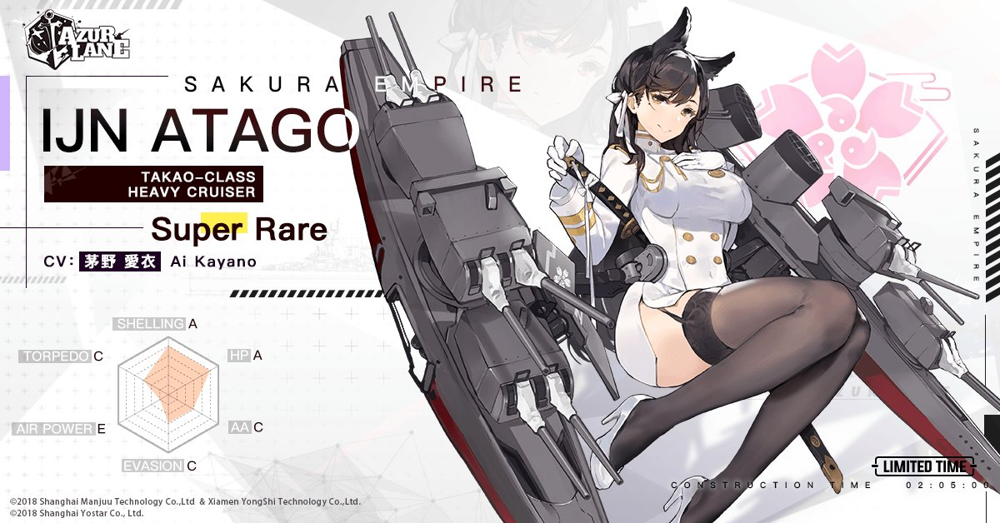

Atago

|
Atago is an antagonist from Azur Lane. She is the counterpart of the IJN Atago heavy cruiser and Takao's sister.
Atago also appears as the final boss of the event "Effort, Hope, and Planning".
As a playable character, she has to be built. She is very caring and has a big
sister or motherly personality while her sister is more strict. |